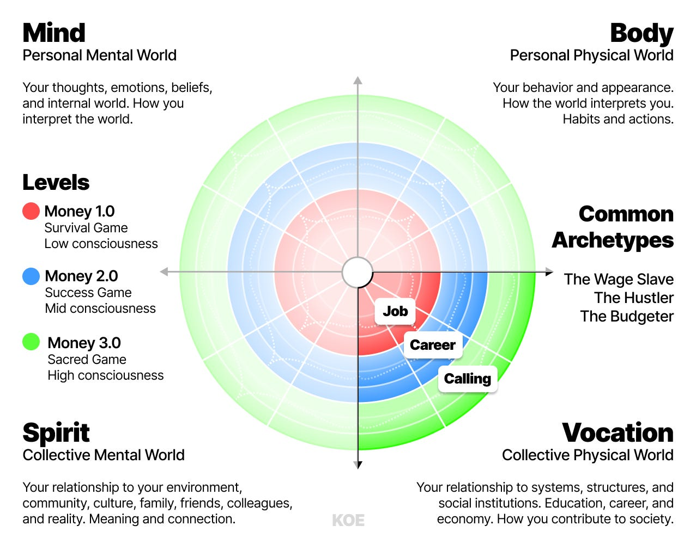

金钱的三个层级（如何逃离工资奴役）
每个人都在玩三种金钱游戏之一：
- 生存（90% 的人）——赚够不死就行。金钱是主人。
- 成功（9% 的人）——赚够"算个人物"就行。金钱是记分牌。
- 神圣（1% 的人）——赚够去真实地创造。金钱是能量。
所以不，金钱不是邪恶的。说它是邪恶的，恰恰是层级 1 思维的明显标志。而那种思维极具破坏性——它会蔓延到你生活的每个领域，把你变成一个苦涩的受害者，让你觉得自己对人生毫无掌控。
过去，能达到层级 3 的人，仅限于那些能积累大量资本或人脉的人。你的出生地、地位、教育、家庭，决定了你大部分的财务未来（这并不意味着他们所有人都、甚至很多人达到了层级 3）。
但现在，得益于创意经济和数字杠杆，它变得比以往任何时候都更易触及。（稍后我们会聊一个"元模型"——无论你身处哪个层级，它都能让你去追求毕生事业。）
人类历史有 4 个主要纪元。
在狩猎采集时代，没有金钱的抽象。人们直接交换物品，是纯粹的价值交换，常常以馈赠的形式出现。
在农业时代，人类能生产更多物品，把精力从生存上解放出来。用牛、盐、贝壳直接交换价值的事还在发生，但真正"金钱"的最初形态开始浮现——以金银这类贵金属为代表。可以把它看作金钱 1.0。基于生存。
在工业时代，金钱 2.0 开始浮现，伴随着资本、投资和规模。对物质成功的竞赛之前就有，但现在在急速扩张。

在信息时代，金钱 3.0 借助数字杠杆、创意经济和意义驱动的市场，第一次可以大规模实现。
但现实是，你没法直接"跳"到自己人生的金钱层级 3。而且有很多人明明身处数字经济，脑子里却还是生存和成功的思维。
金钱当下的文化阶段是：大多数人痛恨自己与金钱的关系，同时又拼命需要它。
今天的世界充满了原型的工资奴隶、副业苦力和精打细算者。
我不是在贬低谁，只是在陈述那些明显可观察到的原型。
在这封信里，我想给你一条路径：克服你与金钱的有毒关系，赚到足以逃离工资奴役的钱，并最终去追求你的毕生事业。
如何逃离工资奴役
金钱层级 1 的残酷现实是：你极难打开自己的心智，去看见新机会。
工作被视为必要的受苦。
出卖时间是赚钱的唯一方式。
退休是唯一的出口，你只是希望接下来的 40 年还能忍受。
你与金钱的关系，大多来自父母的 conditioning（驯化）。如果你的父母没有处在更高的发展层级，你就会继承各种模式：把"找一份高薪工作"当作终点目标，把剩下的钱存起来以防万一，向下比较而不是向上（至少我没露宿街头！），以及一本正经地盼着自己中彩票。
层级 1 思维，正如 HUMAN 3.0 模型所阐述的，其特征是认为做事"有且只有一种正确方式"——而这种认知往往来自你被 conditioning 所灌输的信念。
金钱的层级 1 并不限于一份工作。但工作是这种层级思维当下最常见的显化。一个人可以一边有工作、一边处在层级 3，但有几个前提条件。
这种低意识的思维会开始渗入你的心理体验，阻碍你在那个人生领域的发展。
每个周一，你感到一阵 dread（恐惧）。
每个周五，你盼着那种暂时的解脱。
一查银行账户，压力就钻进你的身体，你得不断计算自己还能花多少。
更糟的是，这会导致影子模式（你意识不到、但在被解决前会一直拖住你的行为）。你评判有钱人是不道德的或走运的，而显然这是一种错误的以偏概全。你靠向朋友抱怨自己的处境来增进感情，不断加固自己的身份认同。你把抠门当成智慧。最后，你还要刻意制造戏剧性，好让自己感到生活里有刺激，而不是把那股能量投向某个令人兴奋的目标。
听起来再糟，这也是一个自然的发展层级。
每个人都是从层级 1 开始的。有些人恰好经历了让他们发展更快的体验，有些人则一辈子被困在里面。我们不想要后者。
通往层级 2 的路径
拿一家中型公司的市场协调员来说。我们叫他 Max。
他一年赚大约 4.5 万美元，助学贷款越堆越多，但至少他"有份正经工作"。辛苦一天后，他喜欢和朋友们打游戏。周末他和朋友去体育酒吧。周一到周初，他得花好几天，从身体、心理、常常还有精神层面上，从周末里缓过来（浪荡的 Max）。
有一天中午，Max 遇到了几个老朋友。他们聊起钱。他们在新科技创业公司工作，赚的是他的三倍。他们邀请他改天一起吃晚饭，但那是一家 Max 去了会心疼钱的餐厅。
回到家盯着天花板看了一会儿后，他决定申请公司的资深协调员职位。他因为"缺乏经验"被拒了。很快，那个 6.5 万美元的职位被一个外部的人拿下了。一个更年轻的人。
这游戏是有黑幕的。
周一的 dread 加剧了。
游戏是他唯一的出口，但它开始变得无聊。
他看见任何一个有点小成就的人，心里都会冒出一句："真不错啊。"
从那种厌恶里，他决定算一笔人生的账。
每年 3% 的涨幅 = 5 年后 5.2 万美元。
房租每年涨 200 美元/月。
助学贷款还要还 9 年。利息在滚。
购房储蓄为零。大概 40 岁还是穷光蛋。如果有什么人走进他的生活，财务状况只会更糟——而且在今天的世界里，谁会想和他在一起？
认知失调像一辆卡车一样撞上了他。
如果继续做同样的事，他的生活只会实质性地变差。
他买了 10 本自助书籍。看完了 Alex Hormozi 的每一个视频。加入了 4 个副业 Skool 社群。在社交媒体上给陌生人私信："教我怎么赚钱。"
而他只觉得更困惑了。
5 个月下来，他试过 dropshipping（无人电商）、加密货币交易（亏了 500 美元）、开 Amazon FBA 店，甚至试过用 vibe coding 写一个 app。
然后他恍然大悟：自己没有真正的技能……只有一个。
他在公司负责 Google 广告。他决定优化现有的广告活动，以此在岗位上练手。老板开始注意到他了。
当你决定追求自己的道路时，最好的起点是痛点、热情或职业。你已经拥有可以转化为独立收入来源的经验。你可以解决自己的痛点，追求你的热情，或者把你在职业中练出的技能拿出来，在上面叠加新技能。
Max 刷到一条推特长帖，讲如何用 Google 广告开始自由职业。
疯狂的同频共振。
那天晚上他睡不着。6 个小时感觉像 30 分钟。他开始到处看见模式。午休变成了 Reddit 研究时间。通勤全部献给了 YouTube 大学。打游戏变成了深度工作。他控制不住。酒吧的邀请他连回都不回。他的消息列表堆满了："哥，你人呢？"
第 10 个月。
他说了句"去他的吧"，给当地一家健身房发了封邮件。
"我可以用广告帮你卖会员。有效了再付我钱。"
健身房老板赌了一把。第一周，3 个新会员。第二周，10 个。
Max 刚刚用他自己的意志，赚到了第一笔 500 美元。
他感到内部的一次 shift（转变）。既然有了这个选项，他凭什么继续过原来那种生活？这很难，拒绝比新客户的到来打击更大，但他感觉这里有东西。他甩不掉这种感觉。
第 13 个月。他的副业收入达到本职的一半。
第 14 个月。两边一样了。
第 15 个月。他辞职了。
新游戏，新问题，但他是多年以来第一次感到活着。
Max 成功背后的机制是什么？
他是怎么到达层级 2 的？
他经历了 3 个明显的阶段。发展的阶段。
- 失调（Dissonance）——他对自己的生活尝够了，尽管它在他眼里是"正常的"。他终于通过把人生摊开画图、加上对不公平事件的观察，意识到自己的人生正驶向哪里。观察到的不公平把他推过了临界点。他有了活化能。
- 不确定（Uncertainty）——他把对现状的厌恶当燃料，开始实验，尽管这个过程他自己都没意识到。他学到很多，差点放弃，但因为坚持，最后终于通了。技能和知识被习得了。
- 发现（Discovery）——他意识到自己确实有隐藏的价值可以提供，而别人需要这种价值。他能把自己的能量聚焦在一条 channel（通道）上，并且抽不出来——它把他吸了进去。
除此之外，他进入了一条 channel——一段 intense 且 obsessive 的发展期，把数年的成长压缩进了几个月。
他是在一个 glitch（裂缝）的推动下进入那条 channel 的——一个高风险的加速器，具体地说，就是一次人生危机，加上残酷地看清了自己不想过的人生。
这些阶段、channel、glitch，是所有领域都有的模式，不只是金钱。
如果你想理解人生的某些领域里的发展层级、你必须经历的阶段、以及加速成长的战术，去研究 HUMAN 3.0。
当第一笔钱到账时，他的身份 shift 了。他到达了层级 2。持续的结果固化了那个身份，而那个身份载着他又走了几年。
如何追求你的毕生事业
每个人都热爱"达到金钱层级 3"这个想法：
工作感觉像游戏。自律是默认状态。金钱不占据你的心，而你却可以想赚多少就赚多少。你早上迫不及待起床，去做你热爱的事。你对你的客户有一种责任感。他们的成功就是你的成功。学习和赚钱合二为一。之前所有的技能都 stack 起来了，让你能从任何兴趣里赚到钱。别人告诉你"轻松点，去生活"，但你不愿意做任何别的事。你不需要逃避。
但问题是，层级 3 不是靠模仿达到的。
伪转变（False transformation）：一个人采纳了更高层级的表象、语言或行为，但实际上并不在那个层级。你可能是一个"显化教练"，用操纵性的销售流程，对钱充满绝望，因为你自己正挣扎在生存线上。
首先，你通过解决层级 1 的问题，到达层级 2。
然后，你通过解决层级 2 的问题，到达层级 3。
这就是发展。如果你一生只专注一件事来快速提升生活质量，那件事就是解决问题。就这么多。但问题的性质是：前面的问题没解决，后面的问题不会显现。你的心智没法从低层级去理解高层级的问题。
层级 1 以生存为特征，你终会厌倦普通。你会到达一个点：厌恶平庸的人生。所有你之前没意识到的问题瞬间浮出水面，你可以选择解决它们，或者维持原样。
层级 2 以成功为特征，一旦你尝到了那个层级的滋味，你终会到达一个点：感到空虚。钱很好，但你本质上把自己建成了一个新 9-5。
当层级 1 的人听到别人这么说，他们会 attach（执着）在这个说法上。
他们会用某种变体说"所有富人都过着无意义、物质化的生活"。他们抓住那个信念，把自己锁在层级 1 思维里。他们甚至不去尝试赚更多的钱——因为一个信念，而不是一段经历。
大多数人把自己困在层级 2，因为他们觉得空虚的解药是停止赚钱。这与真相相差十万八千里。你赚多少钱，反映的是你解决的问题的层级。层级 3 的金钱，反映的是复杂的发展和价值。
以 Loom 的创始人为例。
他花了好几年建 Loom。他有一个目的。一个让心智有序的方式。然后他以近 10 亿美元的价格卖掉它，财务上彻底自由了。不久之后，他经历了一场存在危机，感到抑郁。他基本上停止了在人生 Vocation（天职）领域里解决问题，而他的身份认同正栖居在那个层级，他没有想到要把足够的能量投入其他领域（心智、身体、精神）。
但问题是，如果 Loom 真的是他的毕生事业，它不会被卖掉。
你可以在层级 1、2 或 3 赚到几百万美元——但你与金钱的关系在每个层级里截然不同（生存、成功、神圣）。只要你不停滞，所有层级都可以深度令人享受。幸福，就是阻力被克服。
金钱有多"邪恶"，取决于你在人生其他领域的发展。如果金钱是你唯一的焦点，而你忽略了心智或精神的发展，那么你始终不会意识到自己对文明的影响。如果你的心智、身体、精神都处在层级 1，那很容易渗透进你对金钱的追求里。
以上面的 Max 为例，他可能到达一个点：意识到自己在给一家补充剂公司跑 Google 广告，而他们用速效"燃脂剂"骗 naive（天真）的客户。Max 帮他们越多，二阶上他就伤害了越多的人。如果他不忽视这一点，他就可以开始窥见层级 3。
第一步：经历一场意义危机
改变人生的第一步，是"打穿"你所在的层级。
但如果你还没打穿那个层级，你大概不会在读这篇文章，或者你纯粹是出于好奇在读。
改变人生的第二步，是对现状彻底受够。在层级 1，你受够按父母或社会给你的剧本生活。在层级 2，你受够孤立地追逐成功和地位。这不代表你"离开"那些层级，而是你超越并包容了它们最有用的部分。每个层级都是不断生长的视角的一部分。
所以，你需要一个反愿景（anti-vision）。
你需要开始创造那个你可以生长进去的新视角。你需要一个正面的负面能量源，把你推进未知。
如果你在层级 2，问自己：
- 5 年后，如果你的收入翻倍但依然感到同样的空虚，你的普通一天长什么样？你能接受吗？
- 你还牺牲了人生的哪些领域，只为了多赚钱？
- 什么类型的工作、客户或买家，让你内心感觉死了？
- 你会变成什么样的"成功人士"，让过去的自己怜悯？
- 对你来说，无意义的日历长什么样？有意义的呢？
- 如果你的唯一身份就是你的收入，你会变成谁？
- 如果你的大部分时间都被你讨厌的工作吞掉，你的关系会是什么样？
让那些想法触发更多想法，并认真想想：如果不改变，你的人生将走向哪里。
第二步：尝试一切，找到那一件事
学习和构建。
这是任何层级的任何人都必须采用的核心习惯。
你穿越未知的方式，是获取知识（学习）、技能（构建）和经验（走进竞技场）。现在你有了一个反愿景（想得越深，它的引力越大），你就有了一颗会开始注意到机会的心智——那些机会以前可能就在你身边溜过去了。
心智是一台模式识别机器。当你有一个 frame（框架：对你想要的有目标，对你不想要的有清晰），你的大脑会用多巴胺的升高来标记重要信息。
每天至少留出一个小时给新的追求。
读新书。关注新账号。换环境。建新项目。任何项目都行。软件。设计。照片。视频。写作。一门生意。一副身体。一段关系。一种新的思维方式。醒来发现自己有能力做任何想做的事，你怎么可能不觉得浑身带电？
减少花在金钱上的时间，把它投资到心智、身体、精神和关系的发展上。这个阶段的目标，是让心智沉浸在那些能让你扩展出层级 3 视角的想法里。鼓励"新奇事物综合征"，因为你白天 stack 知识没问题，但如果经验跟不上，你什么也学不到。
在整个过程中，心里记下那些有意义的、你想成为生活一部分的想法、习惯和活动。
3-6 个月后，可能更久，你应该收集到足够的清晰度，让你有信心彻底转型去做一件新事。
这是部署战术性压力的最佳时机。
搬到另一个州。把大部分钱投进一个新事业，让自己有压力把它做成。把自己放到非赢即输的局面里。大多数时候，这会让你 kick 进一段 intense 的进步期，发射到人生的下一个阶段。
第三步：为毕生事业选择一个元模型
追求毕生事业有几百到几千种方式。
显然，我在这里不可能全部覆盖。
但我可以讲一种任何人都能追求的新方式。
我叫它"元模型"，而你正在看着它。
那个元模型，就是成为一个 creator（创造者）。
不完全是 content creator（内容创作者），而是你作为一个人是谁的核心。（我们将在下一封信里聊内容创作的三个层级。）
以 Jordan Peterson 为例（不管你怎么看他）。
他不是 content creator，但他创造内容，因为对追求他的毕生事业而言，这是杠杆最高的活动之一。他写书，有线上学院，有软件，主持播客，做公开演讲。他从自己的专业起步，在互联网上放大它。他有一个有意义的使命要去追求，并用了他手中最好的工具。今天，那些工具是数字的。
每一门生意或创业尝试，在某种程度上都需要 media（媒体）。
个人现在拥有的权力，远远超过历史上任何时刻，而且还会继续增加。这种权力转移发生在 3 个层级上。
互联网让人们能接触到任何和所有知识。权力从学校和机构转移走了。
社交媒体给了人们吸引自己受众的杠杆。权力从雇主、出版商、中心化媒体甚至唱片公司转移走了。人们现在可以学习、构建、赚钱，而不必依赖别人的权威。
人工智能正在赋予人们创造、自动化和外包几乎任何东西的能力。权力正在从传统的守门人和中间商那里转移走。人们很快就能用一小部分人力，以大型团队的水平运营。
这为什么重要？
它允许了意义驱动型市场的出现。
是的，有层级 1 思维的人披着 influencer（网红）和 attention hacker（注意力黑客）的外衣，但你可以用同样的工具去贡献更伟大的东西。这种新的数字杠杆有几个组成部分：
- 零边际成本分发——同样的努力，分享给一个人或一百万人
- 无许可杠杆——不需要守门人、出版商或机构，就能触达受众
- 复利增长——内容创建一次，在你睡觉时继续工作，7x24 积累受众
- 全球触达——只要有 wifi，就能触达全星球的人口，找到那些与你的信息共振的具体的人
- AI 放大——倍增创造产出的工具，处理重复性任务，让你专注于独特视角
- 直接变现——平台让支持者即时付款，不需要中间商
个人现在可以追求任何兴趣或任何一行工作。
如果你对某件事感兴趣，有一整群人也对。
如果你有一个痛点、热情或职业，能让别人从中受益，那就是你需要的全部验证。
多亏了技术，个人现在能建起以前需要 10-100 人团队的东西：
- 一家个人媒体公司（博客、newsletter、播客、YouTube）
- 一个教育平台（课程、coaching、社群）
（人们不讨厌课程和教练，他们讨厌层级 1 的课程和教练，因为它们经常是骗局和伪转变。）
- 软件产品（用无代码工具、AI 辅助，或者纯粹靠学习和意志力）
- 实体产品（按需印刷、dropshipping、小批量制造）
这在金钱的任何层级上都是可能的。
当然，如果你已经在层级 2，或者已经有钱了，转型只会更容易。你之前在金钱领域 stack 的技能越少，你就得做越多的学习和构建。
因为我生在互联网时代，所以我从那里起步。因为那时我还处在层级 1，结果 7 种不同的商业模式都失败了，然后去做了一份网页设计的工作，最终又绕回到了 creator。
做了 5 年之后，我不能说我处在层级 3，但工作从未感觉如此 aligned（对齐）和令人享受。我想象不到自己去做任何其他事。
谢谢你读到这里。
—— Dan